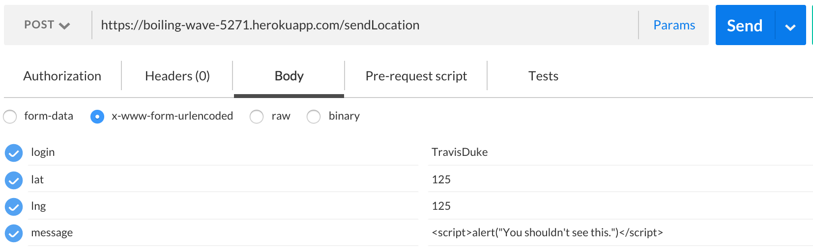
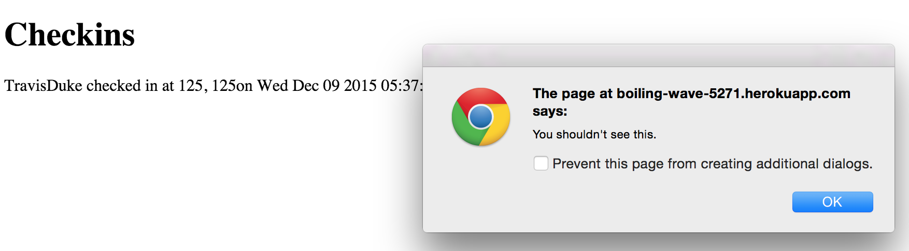
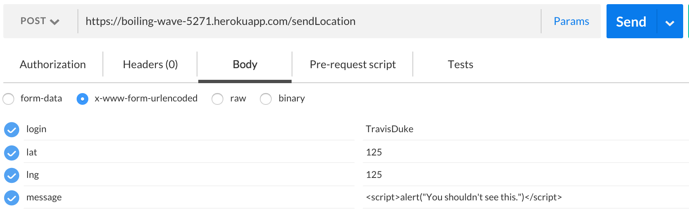
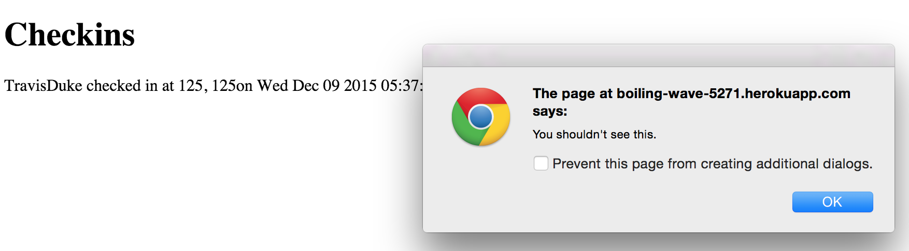

Introduction
My client's product, found at https://boiling-wave-5271.herokuapp.com, is set up to provide a message board for people on the system, recording their current position and the time that they posted. I, Scott Bettigole, have been hired to provide an analysis of the security issues in the product. I will look for and provide information about any and all security flaws I find, so that the program may be improved to lower security risks and prevent any future problems. I will offer potential ways to solve the issues found.
Methodology
To be able to post my own messages and location to the server, I used a program called Postman. This program allows me to post anything that I want, and it is up to the server to prevent anything malicious from being added to the database. I went through the different keyword requirements to post, and checked to see if I could enter malicious data into the client's database through malicious data in my post.
Abstract of Findings
I found three separate instances where the program is at risk malicious attacks through malicious posts to the board. The issue is that users may input any data into the latitude, longitude, or message fields, and the program currently will not check whether or not the user's input is safe. The message board will take these posts, and enter the information into the database, as long as the login is correct and all the input fields have been filled. When users go to the message board, the page will give users the entire database, which presently may include malicious postings designed to attack the user.
Issues Found
I found three separate cases where the site is vulnerable to cross-site scripting attacks. The lat, lng, and msg keys may be altered to include scripts, which can give malicious scripts to any users who access the site.
On the lat keyword in the database, you see below that I have entered in data that the server should not accept.
 Now, instead of providing the message board, the malicious data I entered redirects the site to an image.
Now, instead of providing the message board, the malicious data I entered redirects the site to an image.
 I then went and deleted those entries in the database to get it back to its original working condition. Next, I attempt to expose issues with the lng keyword in the database. As shown below, I try to post an alert that should not be accepted by the server.
I then went and deleted those entries in the database to get it back to its original working condition. Next, I attempt to expose issues with the lng keyword in the database. As shown below, I try to post an alert that should not be accepted by the server.
 However, the code I entered gets added to the database, and gives an alert to the screen, which can be seen by anyone who access the webpage.
However, the code I entered gets added to the database, and gives an alert to the screen, which can be seen by anyone who access the webpage.
 On a third point, cross-site-scripting can also be used on the message key. Below, I enter in a javascript alert to be posted in the msg key.

This should be stopped from being entered, but the database accepts it, and responds with this alert to any user who accesses the message board:

Each of these issues may be seen on the home page(/), but is a flaw with the /sendLocation path. Each of these issues are high risk, since any user may post data that then gives malicious data to every future user who accesses the site. This may be fixed by making the only data that may be entered into the lat and lng fields be floats, so that nothing other than a number may be entered for the lat and lng. For the msg field, any time that a user tries to put in a '<' character, you change it into its html encoded '<', so that users cannot enter in script tags to messages they post.
On a third point, cross-site-scripting can also be used on the message key. Below, I enter in a javascript alert to be posted in the msg key.

This should be stopped from being entered, but the database accepts it, and responds with this alert to any user who accesses the message board:

Each of these issues may be seen on the home page(/), but is a flaw with the /sendLocation path. Each of these issues are high risk, since any user may post data that then gives malicious data to every future user who accesses the site. This may be fixed by making the only data that may be entered into the lat and lng fields be floats, so that nothing other than a number may be entered for the lat and lng. For the msg field, any time that a user tries to put in a '<' character, you change it into its html encoded '<', so that users cannot enter in script tags to messages they post.
Conclusion
In the future, make sure that you never trust user input. This program would work fine if everyone entered only nice data, but it can be easily broken by someone looking to damage your site. Try to make sure that any time user data is posted to a database or shown to other users, that steps are taken to prevent someone from trying to post malicious data.